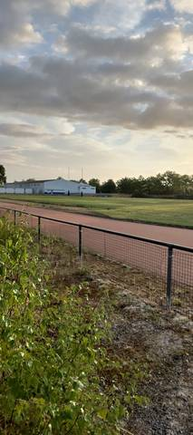
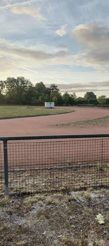

{kind=link}
{kind=link}
Je suis passé un soir de fin août : le stade était fermé, portail cadenassé, et j'ai pris mes photos à travers le grillage. De l'extérieur, on voit une grande piste en cendré de 400 m, qui a l'air en bon état, avec une longue ligne droite pour le 100 m et le 110 m haies, et une aire de lancer du javelot. C'est une vraie piste d'athlétisme, mais close, et je n'ai vu aucun panneau d'horaires ni la moindre indication sur la façon d'y entrer. Challans a une autre piste, à Jean Léveillé : superbe, et ouverte à peu près en continu. C'est celle-là que je conseille. Celle de la Cailletière ne vaut le détour que si quelqu'un vous dit à quelle heure le portail s'ouvre.
Complexe sportif de la Cailletière
Rue de la Cailletière, 85300 Challans · Vendée
Complexe sportif de la Cailletière is an athletics venue in Challans (Vendée), Pays de la Loire, France. It has a 400 m cinder / gravel running track. It also offers javelin. The venue provides floodlighting, changing rooms and showers.
Photos


A photo is surely still missing
Jump pits and throwing areas are what public data describes worst, and what gets photographed least. A close-up of the ground, a covered vault pit, a sand box gone to weeds: each adds what no field carries.
Send a photoNo GitHub account?Track
- Surface
- Cinder / gravel
- Lap length
- 400 m
- Track type
- Athletics stadium oval
- Setting
- Outdoor
- Opened
- 1988
- Last refurbished
- 2011
Recorded facilities
- Javelin
Access & amenities
- Free access
- No / members only
- Floodlighting
- Yes
- Changing rooms
- Yes
- Showers
- Yes
- Toilets
- Yes
- Stand
- 50 seats
Portail cadenassé lors de la visite du 30 août 2026, en fin de journée : les deux photos sont prises de l'extérieur, à travers le grillage à mailles qui ceinture l'anneau. Aucun panneau d'horaires, de règlement ni de créneaux réservés n'a été vu à l'entrée. Rien ne dit que le stade n'ouvre jamais — seulement qu'il était clos ce jour-là, et qu'aucun affichage n'annonçait quand il ne l'est pas. Le ministère déclare l'accès non libre pour le stade d'athlétisme lui-même, et libre pour l'aire de lancer ; le portail les rendait toutes deux inaccessibles. C'est pourquoi la fiche porte acces_libre à faux : build_data agrège ce drapeau par un OU sur tous les équipements de l'installation, si bien que le « oui » de la seule aire de lancer suffisait à rendre libre d'accès un complexe fermé à clé. Le constat du 30 août 2026 tranche contre l'agrégat. L'API continue de ne rendre que true ou null : elle n'affirmera jamais l'absence d'accès. Les vestiaires, douches et sanitaires affichés sont ceux que le ministère déclare à l'échelle du complexe — gymnase et salle de gymnastique compris ; le stade d'athlétisme lui-même n'en déclare aucun, et rien n'a pu en être vérifié de l'extérieur. La ville de Challans écrit de son côté, sur sa page « Équipements en accès libre » (challans.fr, consultée le 2 septembre 2026), que « la piste stabilisée du complexe sportif de la Cailletière sont à votre disposition, en dehors de l'utilisation par les scolaires et clubs sportifs ». Les deux constats ne se contredisent pas nécessairement — la ville annonce une mise à disposition, la visite a trouvé le portail fermé un soir de fin août — mais ils ne se recouvrent pas non plus, et aucun affichage sur place ne disait lequel s'appliquait ce jour-là.
Athlete reviews
Le ministère déclare bien cette piste. Sous l'installation I850470009, Data ES porte un « Stade d'athlétisme » découvert de 400 m en stabilisé/cendrée, dont les observations précisent « Nature du sol : cendré », éclairé, 50 places de tribune, mis en service en 1988 et retravaillé en 2011, ainsi qu'une aire de lancer cendrée de 20 × 15 m. Elle avait pourtant disparu de l'annuaire : le cache local du 29 août 2026 avait été constitué alors que la jointure amont était rompue — 3 530 des 9 608 équipements d'athlétisme exportés désignaient une installation absente du second export — et toute la Vendée était tombée avec eux, réduite à deux sites. Le portail a depuis réparé sa jointure : l'export du 30 août 2026 ne compte plus que 11 orphelins sur 9 608 et rend 151 944 installations au lieu de 103 437, ce qui ramène l'annuaire de 4 666 à 7 280 sites — la Vendée à 83, la Sarthe de 1 à 109. Écrite sous le numéro du ministère, cette fiche fusionne donc avec la sienne au lieu de la doubler. Visite du 30 août 2026, depuis l'extérieur seulement. L'anneau est en cendrée rougeâtre, la surface de course propre et régulière, l'herbe ne mordant que sur le bord extérieur. Aucun marquage de couloir n'est lisible sur les deux vues, et rien ne sépare la cendrée de la pelouse centrale : ni lice ni bordure. Le développement de 400 m est celui que déclare le ministère, pas une mesure — faute de corde, il n'y a d'ailleurs pas de couloir 1 à 30 cm duquel le mesurer. Une longue ligne droite, décrite sur place comme servant au 100 m et au 110 m haies, borde l'anneau à l'ouest ; l'orthophoto IGN 2025 la montre nettement, large bande de cendrée qui poursuit tout droit vers le nord là où le virage s'en détache, et se termine en bout carré près des bâtiments modulaires. Les mâts d'éclairage sont visibles sur la photo de la ligne droite, ce qui recoupe la déclaration du ministère et le tag lit=yes d'OpenStreetMap (way 114933407, porteur de ref:FR:sport_equip=E002I850470009). Seule l'aire de javelot a pu être identifiée depuis le grillage ; aucun autre agrès ne l'a été, ce qui ne dit pas qu'il n'y en a pas. L'orthophoto IGN 2025 montre en outre une bande claire le long de la ligne droite ouest et une grande aire claire dans le virage sud, qui pourraient être un bac de sable et une aire de lancer — déduit de l'image, non vérifié sur place, et donc laissé hors des agrès. Le point de la fiche est le centre de l'anneau relevé dans OpenStreetMap, et non celui de l'installation dans Data ES, qui pointe à une centaine de mètres au nord-ouest, sur le gymnase de la Cailletière : dans une enceinte close, cette différence envoie du mauvais côté du grillage. La même installation abrite un gymnase, une salle de gymnastique, un pas de tir à l'arc et un terrain de rugby-football en gazon, qui occupe la pelouse centrale de l'anneau. Challans a une seconde piste de 400 m, synthétique celle-là, au complexe sportif Jean Léveillé (I850470014, boulevard Jean Yole), à moins de deux kilomètres au sud-ouest.
Other venues in the department
- Complexe sportif Jean Léveillé
- College Milcendeau
- Salle Omnisports
- Parc des Sports
- Stade d'Athletisme
- College Public Pierre Garcie Ferrande
Official website of the venue · Report an error or complete this record
Réf. I850470009 · Source: Data ES + community — Data ES, French ministry for sport, Licence Ouverte 2.0. Records are self-declared and may be incomplete: check access conditions before travelling.